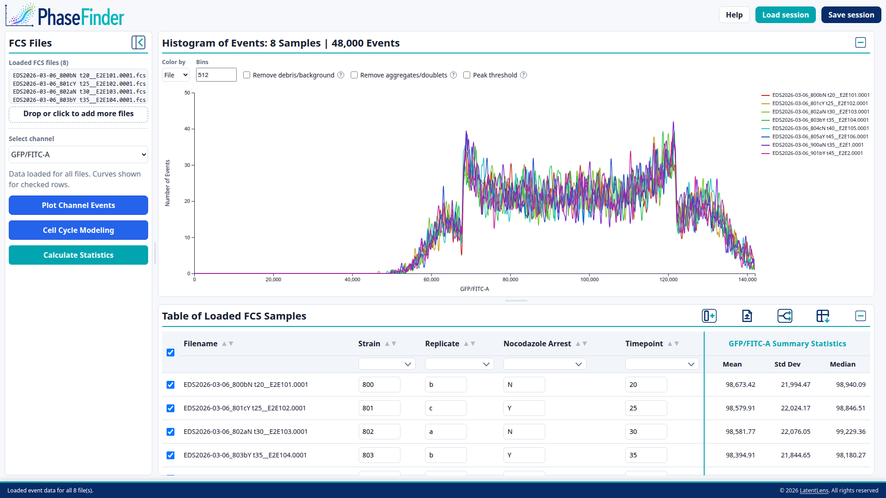
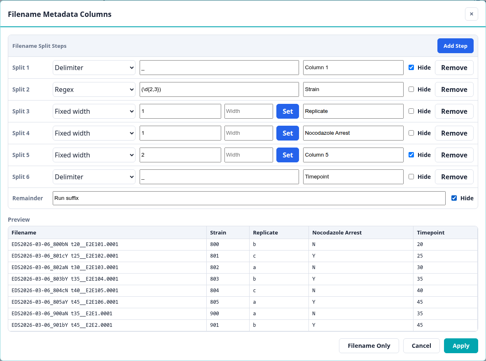
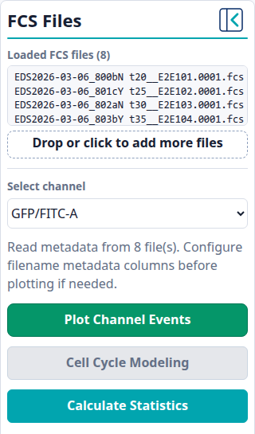
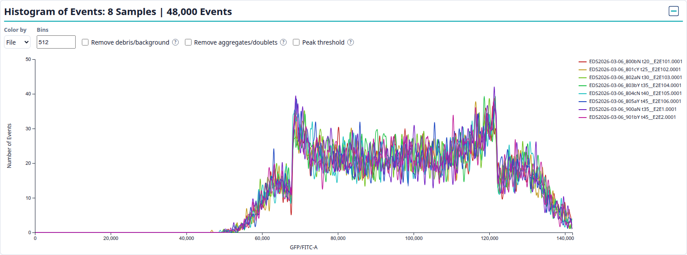
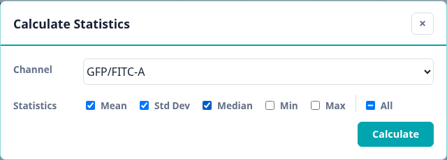
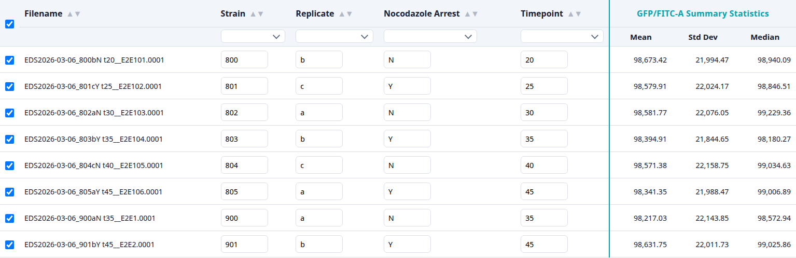

PhaseFinder Help
A complete reference for every control in PhaseFinder, plus a step-by-step walkthrough of a typical analysis session.
PhaseFinder is a browser-based tool for inspecting flow cytometry .fcs files. Drop files onto the page, annotate them, choose a DNA-content channel, and plot an overlaid event histogram — optionally fitting a Dean–Jett–Fox (DJF) cell-cycle model to read off %G1 / %S / %G2. Everything runs locally in your browser: files are never uploaded to a server.
1. Overview
PhaseFinder's screen is organized into these areas:
- Sidebar (left) — drop zone for FCS files, the DNA-content channel selector, and the main action buttons (Plot Channel Events, Cell Cycle Modeling, Calculate Statistics). Cell Cycle Modeling switches the sidebar into a modeling view that holds the Pre-modeling QC filters and the manual DJF pipeline controls; Back returns it to the file/channel controls.
- Plot panel (top of the workspace) — appears once you plot a channel; shows the overlaid event histogram, its controls, and (once modeling starts) the DJF fit overlay and results table.
- Metadata table panel (bottom of the workspace) — one row per loaded FCS file with editable annotations, sorting, filtering, and optional summary-statistics columns.
- Header (top) — the PhaseFinder logo plus Help, Load session, and Save session.
- Status bar (bottom) — progress, completion messages, warnings, and copyright information.
The header also has Load session and Save session buttons for saving your work to a file and restoring it later (see Saving & Loading Sessions).

Header and session buttons Plot panel Metadata table panel Status bar- Header and session buttons: open help, load a saved session, or save the current session.
- Sidebar: load files, select a channel, plot, model, and calculate statistics.
- Plot panel: view histograms and plot controls for the selected channel.
- Metadata table panel: edit annotations, filter/sort samples, export TSV data, and review statistics.
- Status bar: read progress, warnings, and completion messages.
Everything lives in memory
PhaseFinder keeps all loaded files, annotations, selections, and plots in the browser tab's memory only. Reloading or closing the page clears everything. Use Save session before you navigate away if you want to pick up where you left off.
2. Loading FCS Files
Load one or more .fcs files by either:
- Dragging them onto the Drop FCS files here zone in the sidebar, or
- Clicking the drop zone to open a file picker.
PhaseFinder reads only each file's header and metadata (TEXT segment) at load time, so adding many files is fast — the actual event data for a channel is only read once you plot or compute statistics on it.
- Files that duplicate an already-loaded filename are rejected with a status message; nothing is re-loaded.
- Newly loaded files appear checked (included) in the metadata table by default — unless a plot already exists, in which case new files start unchecked so they don't unexpectedly change an existing plot.
- The sidebar shows a running Loaded FCS files (N) list once at least one file is loaded.
- A progress overlay reports read progress for larger batches of files.
If you collapse the sidebar (see Layout Controls), a compact icon rail still lets you drop or browse for more files , change the channel , plot , model , and calculate statistics .
 , change the channel
, change the channel  , plot
, plot  , model
, model  .
.3. The Metadata Table
Every loaded file becomes one row in Table of Loaded FCS Samples. Each row has a checkbox; only checked rows are included the next time you plot. The filename column is read-only (shown without its .fcs extension); every other column is editable.
Editing annotations
Click into any annotation cell to type a value directly — strain, replicate, arrest status, timepoint, or whatever custom columns you've configured (see below). Edits are stored immediately and are included if you save a session or export the table.
Use the add-column icon in the table title bar to create a blank editable metadata column by hand. Use the metadata import icon  to load a CSV or TSV metadata file. The file must include a filename-like column such as Filename, Sample Name, or FCS File; PhaseFinder matches those values to the currently loaded FCS filenames and ignores metadata rows for files that are not loaded.
to load a CSV or TSV metadata file. The file must include a filename-like column such as Filename, Sample Name, or FCS File; PhaseFinder matches those values to the currently loaded FCS filenames and ignores metadata rows for files that are not loaded.
 in the table title bar to create a blank editable metadata column by hand. Use the metadata import icon
in the table title bar to create a blank editable metadata column by hand. Use the metadata import icon Sorting & filtering
- Sort: click a column header's label to toggle ascending/descending, or click one of the small ▲ / ▼ arrows to jump straight to that direction. The Timepoint column sorts numerically even though it's stored as text.
- Filter: click the pill under a column header to open a checklist of that column's distinct values; check one or more values to show only matching rows. Clear the checkboxes to show all rows again.
- Filtering hides and deselects: a row hidden by a filter is automatically unchecked, so what's plotted always matches "visible ∩ checked". Removing the filter does not automatically re-check the row.
- The header checkbox selects or deselects every currently visible row (it shows an indeterminate dash when only some visible rows are checked).
Filename metadata wizard
Rather than guessing annotation values, PhaseFinder lets you derive metadata columns directly from each filename. The wizard opens automatically about a second after your first files load (only once per browser tab); you can reopen it any time via the filename-metadata icon in the table's title bar (it's disabled until at least one file is loaded).
 in the table's title bar (it's disabled until at least one file is loaded).
in the table's title bar (it's disabled until at least one file is loaded).
The wizard works left to right through the filename. Each split step extracts one piece from the current remaining text; the text after that split becomes the input to the next step. The file extension is already stripped before the first rule runs.
- Delimiter — splits at the first occurrence of a fixed character or string, e.g.
_. - Fixed width — splits at a character position. Enter one or more comma/space-separated break positions, or type a column width into the small box and click Set to convert it into a break position automatically.
- Regex — splits using a JavaScript regular expression. If the pattern has a capture group, the captured text becomes the column value (useful for pulling a token out of the middle of a name); otherwise everything before the match becomes the value.
Every step (and the final Remainder, i.e. whatever text is left after all steps) gets its own column name and a Hide checkbox to exclude it from the table entirely. Use Add Step to add another split, or the step's Remove button to delete it (at least one step must remain). The Preview panel shows how the first 20 loaded filenames would split with the current configuration, updating live as you edit.
In the example above, a filename like EDS2026-03-06_800bN t20__E2E101.0001.fcs is parsed into:
| Step | Rule | Captured text | Remainder sent to next step | Shown? |
|---|---|---|---|---|
| Split 1 | Delimiter _ | EDS2026-03-06 | 800bN t20__E2E101.0001 | Hidden |
| Split 2 | Regex (\d{2,3}) | 800 | bN t20__E2E101.0001 | Strain |
| Split 3 | Fixed width 1 | b | N t20__E2E101.0001 | Replicate |
| Split 4 | Fixed width 1 | N | t20__E2E101.0001 | Nocodazole Arrest |
| Split 5 | Fixed width 2 | t | 20__E2E101.0001 | Hidden |
| Split 6 | Delimiter _ | 20 | _E2E101.0001 | Timepoint |
| Remainder | After all rules | _E2E101.0001 | Hidden |
That leaves the visible columns Filename, Strain, Replicate, Nocodazole Arrest, and Timepoint. The hidden pieces are still used while parsing, but they do not become metadata table columns.
Regex quick primer
Regex is useful when the next value is identified by a pattern rather than a fixed separator. Parentheses create a capture group; if a regex step has a capture group, PhaseFinder uses the captured text as that column's value.
| Pattern | Useful when |
|---|---|
(\d{2,3}) | Capture a 2- or 3-digit strain number. |
^([A-Za-z]) | Capture the next single letter at the start of the remaining text, such as a replicate or arrest flag. |
t(\d+) | Capture one or more digits after t, often used for timepoints like t20. |
_(\d+) | Capture digits that appear after an underscore. |
- Apply commits the configured columns, replacing whatever custom columns exist. Values already typed for a column are kept if that column's field key is unchanged; values for genuinely new columns are filled in from the split.
- Filename Only clears all custom columns, leaving just the read-only Filename column.
- Cancel (or the Esc key) discards any unsaved edits in the wizard.
The last-applied split configuration is remembered in your browser (not tied to any one set of files) and is reapplied automatically to files you load later, and is also captured when you save a session.
Exporting to TSV
 in the metadata table title bar.
in the metadata table title bar.The export icon in the table's title bar exports exactly the currently visible rows as a tab-separated .tsv file. Active filters are respected, so the exported file matches the rows you are looking at in the table.
The TSV includes the filename, every visible metadata column created by the wizard or typed by hand, and any summary-statistics columns currently shown. This makes the export useful as an analysis-ready metadata sheet after you have annotated samples and calculated channel statistics.
4. Choosing a Channel

The Select channel dropdown lists every FCS parameter label seen across all loaded files. In an FCS file, each parameter can have several pieces of metadata. PhaseFinder uses $PnS first because it is usually the user-facing stain or signal label, falls back to $PnN when $PnS is missing, and finally generates a generic P<n> label if neither value is available.
PhaseFinder guesses a likely DNA-content area channel automatically (looking for names containing patterns like DAPI_A, DNA_A, or ending in _A/AREA) and pre-selects it when possible — check that the suggestion is right before plotting.
Plot Channel Events stays disabled until at least one file is loaded and a channel is chosen.
If you change the channel after already plotting, PhaseFinder preloads the newly selected channel's data in the background and clears the old curves. Click Plot Channel Events when you are ready to switch the visible plot explicitly.
5. Plotting Events

Click Plot Channel Events to load the selected channel's data for every checked row in the metadata table and draw an overlaid event histogram (x-axis: the chosen channel; y-axis: number of events). The plot panel title reports the number of plotted samples and total included channel events.
The plot stays live afterward: checking or unchecking a row in the metadata table immediately adds or removes its curve — unchecking a row does not discard its already-loaded data, so re-checking it is instant. After the first plot, the button turns blue as a reminder that a channel is already plotted; click it again any time to refresh.
Color by, display, and bins
- Color by — File gives every sample its own color; Strain groups samples sharing the same Strain annotation under one color.
- Display — choose smoothed curves, histogram bins, or both.
- Bins — the histogram bin count (16–1024, default 512). Increasing the bin count makes narrower bars and can reveal finer structure, but also makes curves noisier when event counts are low. Decreasing the bin count smooths the curves and makes broad trends easier to compare, but can hide small peaks or shoulders.
Event-quality masks and contamination terms are controlled by the explicit DJF stages below, so every correction has a visible checkpoint and diagnostic readout.
6. Cell Cycle Modeling
Once a channel is plotted, click Cell Cycle Modeling in the sidebar. The file and channel controls slide away and the sidebar reveals the Pre-modeling QC Filtering box (Stage 0–3: Structural, Time, Cell Gate, Singlet Gate — toggle individually or with their own Run All) and the Identify Peaks panel; moving these out of the plot panel also gives the histogram more height. QC (Stage 0–3) is a separate action, applied on its own before peak review. Back returns the sidebar to the file/channel controls without losing any progress.
With exactly one sample checked, Identify Peaks reviews that sample; with several checked at once, click a row in the table to choose which one it's reviewing. Detect Peaks runs automatic peak detection and proposes G1 and G2/M regions, shown with a confidence readout; the four numeric fields let you adjust each region's left/right limits directly, with inline validation if an edit breaks their ordering. Reset discards manual edits and restores the automatic proposal; Accept marks the current regions reviewed. Choosing a model and fitting it against the reviewed regions is not wired up in the UI yet.
Pre-modeling QC stages
- Stage 0: Structural QC rejects non-finite, negative, and saturated measurements while preserving original event indexes.
- Stages 1–3 (optional) perform Time acquisition QC, FSC/SSC cell-cloud gating, and DNA pulse-geometry singlet gating when the required channels exist. After Stage 2, drag the teal ellipse or its center marker to reposition the cell gate, hold Shift or Ctrl while dragging (or Ctrl plus Left/Right arrow when focused) to rotate it around its center, or change Gate coverage to resize it. Each edit immediately updates the scatter mask and invalidates the histogram and any peak regions so they can be rerun with the edited gate. Reset fitted gate restores the GMM-selected center, coverage, and rotation.
- Stage 4 builds the masked histogram automatically, rebuilding whenever QC changes.
Works offline
Peak detection and nonlinear fitting are implemented in PhaseFinder's own ES modules, and D3 is vendored locally. The complete pipeline requires no runtime CDN connection.
7. Summary Statistics
Calculate Statistics opens a window where you can pick any loaded channel and one or more statistics — Mean, Std Dev, Median, Min, Max, or All — computed per file across every loaded sample (not just checked rows).

Click Calculate to run the selected statistics. A progress bar appears in the Calculate Statistics window while PhaseFinder loads any needed channel data; files already loaded for plotting reuse their cached data.

Results are added to the metadata table as grouped columns, such as GFP/FITC-A Summary Statistics spanning Mean, Std Dev, Median, and any other metrics you chose. These columns are included when you export the metadata table.
If you reopen the Calculate Statistics window for a channel that already has statistics, those already-computed metrics are disabled so you do not recompute the same columns. The All checkbox only selects metrics that are still available for that channel.
Statistics are calculated automatically on new FCS file loads
Once you compute a statistic for a channel, PhaseFinder remembers that channel/statistic combination for the rest of the session. Any FCS file you load afterward gets the same statistics calculated automatically and filled into the new row, with no need to reopen the Calculate Statistics window.
8. Saving & Loading Sessions
Because PhaseFinder keeps no server-side state, a session file (a human-readable .toml file) is how you resume work later or share a configured analysis with someone else. Use Save session before closing the tab, refreshing the page, or switching to another dataset.
Save session writes the analysis state needed to rebuild your workspace:
- The list of loaded filenames and per-file reconnect metadata such as size, modified time, and app-private cache paths.
- Every metadata column and its values, plus the active filename-splitting template.
- Table state: which rows are checked, the active sort, and active column filters.
- Plot settings: channel, color-by, display mode, and bin count. Retired correction keys remain readable only for older-session compatibility.
- Any summary statistics you've computed (so they're recomputed automatically on load).
- Layout: sidebar/panel collapsed states, sidebar width, and panel heights.
The session file is not a data archive
The .toml file does not embed the original FCS event data. It stores enough information to reconnect those FCS files later. Keep the session file near the FCS folder, or avoid renaming/moving the source files after saving.
Load session reads the TOML file, restores the saved table, filename parsing, plot, statistics, and layout settings, and then tries to reconnect the original FCS files. What you see next depends on browser support and whether the files are still available:
- Fast path: local browser cache. When supported, PhaseFinder keeps app-private working copies of loaded FCS files in browser storage. If those cached copies are still present and match the saved file records, the session can restore without asking you to pick FCS data files again.
- Chromium browsers with folder access. If cached copies are missing, Chrome/Edge can ask you to choose the folder containing the FCS files. PhaseFinder remembers that folder handle in browser storage; future loads may only need you to grant permissions instead of a fresh folder search.
- Firefox/Safari or fallback mode. Browsers without persistent folder-handle support ask you to choose the folder or select the missing files manually each time reconnect is needed.
- Moved, renamed, or replaced files. PhaseFinder matches by filename and file metadata where possible. If a file was renamed, moved out of the chosen folder, or replaced with a different-size file, it may remain listed as missing until you select the correct file manually.
- Continuing without missing files. The reconnect dialog has Continue without missing. Use it only when you intentionally want to open a partial session; plots and statistics can only be rebuilt for files that were successfully reconnected.
When a session is only partially reconnected, the saved metadata and settings still load, but any missing FCS files cannot contribute event data, plots, model fits, or statistics until you reconnect them.
9. Layout Controls
- Collapse the sidebar using the arrow icon in its title bar; a slim icon rail remains for uploading files, choosing a channel, and plotting.
- Resize the sidebar by dragging the vertical handle between the sidebar and the workspace.
- Resize the plot vs. table by dragging the horizontal handle between the plot panel and the metadata table panel (only draggable while both panels are expanded).
- Collapse the plot panel or the table panel independently using the minimize icon in each panel's title bar, to focus on the other.
 in its title bar; a slim icon rail remains for uploading files, choosing a channel, and plotting.
in its title bar; a slim icon rail remains for uploading files, choosing a channel, and plotting. in each panel's title bar, to focus on the other.
in each panel's title bar, to focus on the other.All of the above are captured when you save a session, so a saved layout is restored along with your data.
10. Resetting the App
Click the PhaseFinder logo in the header to reload the page for a clean slate — this clears every loaded file, annotation, selection, filter, and plot. Save a session first if you want to keep your work.
11. Typical Workflow
- Navigate to PhaseFinder in a browser: https://PhaseFinder.LatentLens.org.
- Drop your
.fcsfiles onto the drop zone, or click the drop zone to browse and choose files. - Wait for metadata loading to finish; watch the progress overlay for large batches.
- When the filename metadata wizard pops up, configure split steps so your filenames map cleanly onto Strain / Replicate / Nocodazole Arrest / Timepoint (or whatever columns make sense for your experiment), check the live preview, then click Apply.
- Review and hand-edit any annotations the wizard couldn't infer, using the table's sort and filter controls to spot-check groups of samples.
- Confirm (or change) the DNA-content channel in the sidebar.
- Check the rows you want in the plot — unchecking removes a sample without losing its already-loaded data.
- Click Plot Channel Events. Adjust Color by, Display, and Bins.
- Click Cell Cycle Modeling to open the modeling controls in the sidebar. Apply the Pre-modeling QC filters you want (Stage 0–3), then use Identify Peaks to detect and, if needed, adjust the G1 and G2/M peak regions for the sample you're reviewing.
- Optionally, use Calculate Statistics to compute per-file summary statistics for any channel, and export the table to TSV for use elsewhere.
- Click Save session before closing the tab so you (or a collaborator) can resume this same analysis later.
12. Tips, Limitations, and Troubleshooting
| Topic | Notes |
|---|---|
| Supported FCS data types | PhaseFinder reads Flow Cytometry Standard files whose header and TEXT metadata describe list-mode data and whose $DATATYPE is F, D, or I. F values are read as 32-bit floats, D values as 64-bit floats, and I values as integers using each parameter's $PnB bit width. |
| Parameter labels | Channels shown in PhaseFinder are extracted from each parameter's $PnS label when present, falling back to $PnN, and ultimately to a generated P<n> label when needed. |
| No backend | Files are read entirely by browser APIs; nothing is uploaded anywhere. |
| State lives in memory | Reloading the page clears everything that isn't saved to a session file first. |
| Network dependency | None at runtime: D3 is vendored locally, and the DJF numeric implementation is repository-native. |
| Folder re-linking on session load | Chromium browsers remember the FCS folder between sessions; Firefox and Safari will ask you to pick it again each time. |